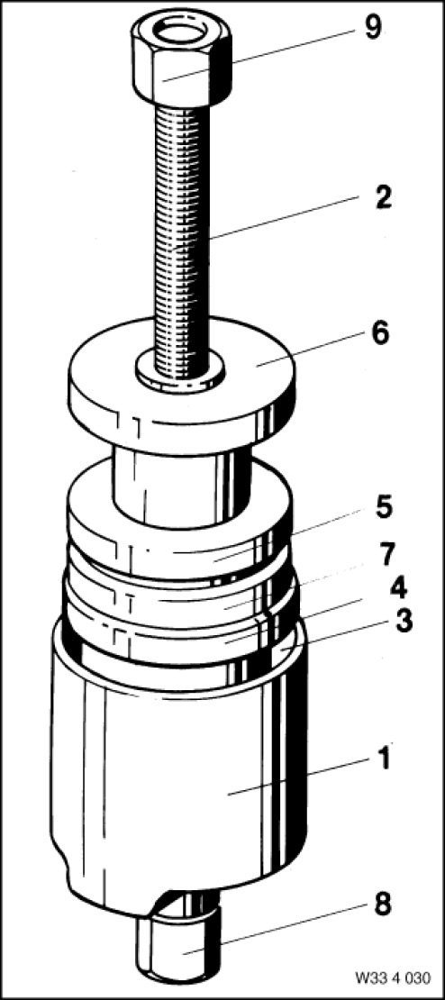

33 4 030 Tool
33 4 030 Tool
0492349
MW

NOTE: (Tool set) For removing and installing rear wheel bearings Components 33 4 032, 33 4 038 and 33 4 039 are discontinued and are replaced in the order by 33 4 301, 33 4 302 and 33 4 303
Storage Location: C7
Consisting of:
9 = 0492358 nut
NOTE: (Nut) replaced with 334303 / 0496551
2 = 0492351 Spindle
NOTE: (spindle) Model series: E28 Replaced by 33 4 301 (0 496 535)
8 = 0492357 nut
NOTE: (Nut with bearing) Model series: E28 Replaced by 33 4 302 (0 496 536)
7 = 0492356 Washer
NOTE: (thrust washer) For installing wheel bearing, rear / model series: E28 / model: 525i, 528i Discontinued, only available via complete tool
1 = 0492350 Bell housing
NOTE: For counter support when removing the rear wheel bearing Discontinued, can only be ordered as part of complete tool 33 4 030 (0492349).
3 = 0492352 Washer
NOTE: (thrust washer) For removing wheel bearing, rear / model series: E28 / model: 518, 528i. Discontinued, can only be ordered as part of complete tool 33 4 030 (0492349).
4 = 0492353 Holding sleeve
NOTE: (guide sleeve) For installing wheel bearing, rear / model series: E28 / model: 518, 520i. Discontinued, can only be ordered as part of complete tool 33 4 030 (0492349).
5 = 0492354 Washer
NOTE: (thrust washer) For installing wheel bearing, rear / model series: E28 / model: 518, 520i Discontinued, can only be ordered as part of complete tool 33 4 030 (0492349).
6 = 0492355 Holding sleeve
NOTE: (guide sleeve) For installing wheel bearing, rear / model series: E28 / model: 525i, 528i. Discontinued, can only be ordered as part of complete tool 33 4 030 (0492349).